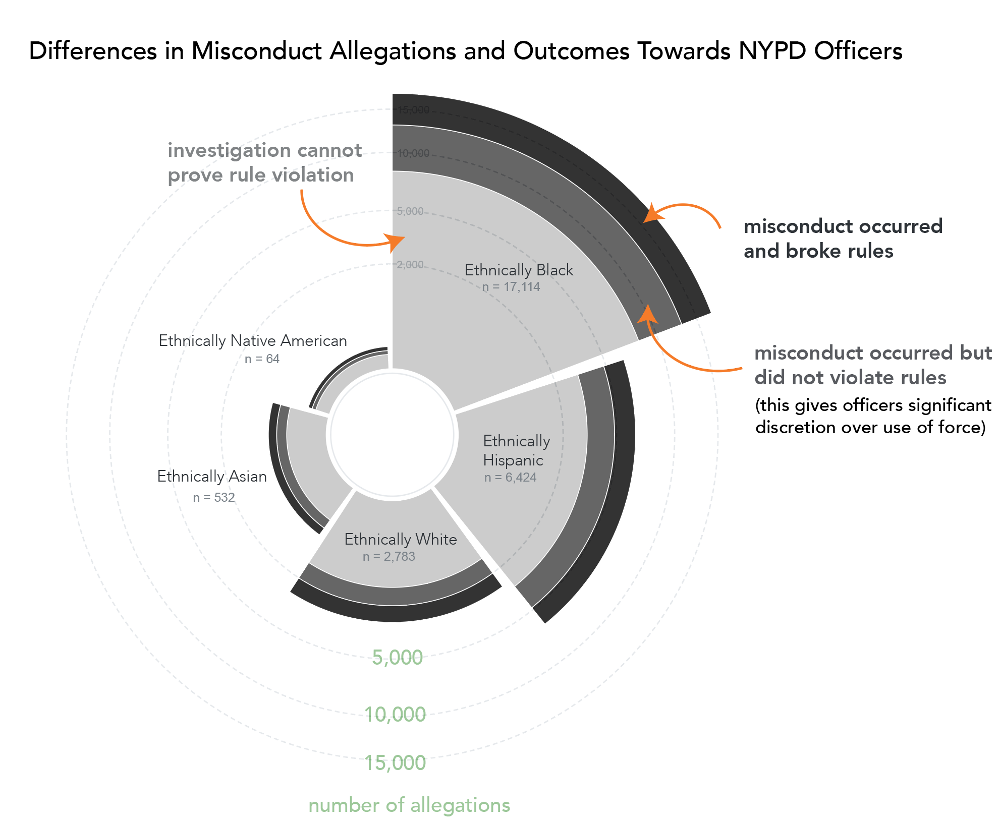
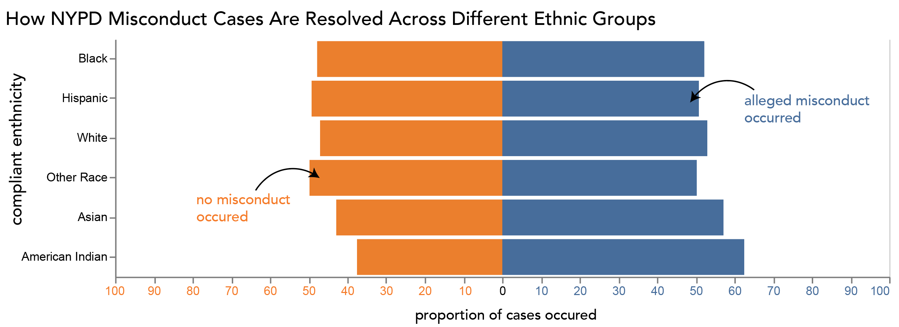

Proposition: Cops Are Not Colorblind: Ethnic Minorities Disproportionately Bear the Burden of NYPD Misconduct.
FOR the Proposition

Design Decisions and Rationale:
- I chose a rose chart (i.e. made a stacked bar chart in radial units) because it emphasizes differences in magnitude across different categories. Radial charts naturally draw attention to the largest segments, making disparities in case counts visually prominent. Specifically because the misconduct cases are at the two top parts, they take up more surface area than they would in a stacked bar chart (my other considered alternative). This makes it easier for viewers to immediately notice that some ethnic groups (e.g. those of black ethnicity) experience significantly more confirmed police misconduct cases than others, specifically for cases with confirmed rule violations. I would give this 1 because while my decision was earnest to convey my message, I acknowledge that in this chart type, surface area is not proportional to across all categories within a slice.
- I also decided to encode the categories using different shades of black rather than a more neutral color because black is often associated with gloomy situations. In each of these cases of police misconduct, someone’s life has been permanently affected by the encounter, for the worse, and I wanted to convey that in the chart. I give this a score of 2 because it does an earnest job of communicating the emotional response elicited by the topic. I think it worked reasonably well, but if I had more time I would potentially choose a background image that would create a stronger emotional impact or combine it with a pictogram that explores the statistic in greater depth.
- I also made the “confirmed misconduct” categories darker shades of black, with “misconduct occurred and broken rules” being the darkest. This was done because, while there might be some false positives in the category where rule violations cannot be proven, the categories with confirmed misconduct represent confirmed true positives, and I wanted to emphasize those first. I would give this a score of 1 because, while I earnestly try to emphasize true positives, I think this does not go far enough in highlighting the differences between these categories. Furthermore, something that did not work well was that the labels were still confusing. For example, “misconduct occurred but did not violate rules” does not sound very serious, so I added an extra annotation noting that this category can also involve excessive use of force.
AGAINST the Proposition

Design Decisions and Rationale:
- By displaying proportions rather than total counts, the chart discounts the fact that certain ethnic groups have significantly higher encounter rates for misconduct cases, even if the proportions appear similar across all groups. I would give this a score of -2 for being fully deceptive, as it frames the data as a distribution that describes the likelihood of misconduct occurring for a person in a certain ethnic group rather than highlighting the unequal frequency of encounters themselves. The alternative would be to keep the total counts of all cases or filter the data differently, but I think converting the data into a distribution/proportion makes it seem like a more “scientific” scale, which might encourage the viewer to interpret the data as more “neutral.”
- I decided to use a diverging bar chart to make it harder for the viewer to visually contrast the difference between cases with no misconduct and those with confirmed misconduct. Alongside this, I made sure the x-axis scale went from 0 to 100 on both sides to make the differences between bars smaller. This further emphasizes the idea that, overall, there are not many more misconduct cases than non-misconduct cases, even though the pie chart above clearly shows that there are. I would give this a score of -2 because knowing the difference between these two categories would give viewers a clearer sense of how many cases are actually confirmed as misconduct. While this decision does not directly make the audience think differently about misconduct across different ethnic groups, it does make it harder to understand the scale of misconduct cases, which may make it more difficult to judge how abusive or traumatic police encounters might be. I did consider just a normal stacked bar chart here but I found that I was having an easy time looking at trends between different ethnicities – thus I wanted to make this task a bit harder.
- Here I combined the two categories for misconduct occurring so that they included cases where misconduct occurred regardless of whether it violated NYPD rules. This allowed me to binarize the data for a simpler contrast. I would give this choice a score of 0 because I think it does not sway the data toward either side of the argument—it simply presents a simpler picture of what was already there. I could have differentiated the categories using opacity; however, the contrast between the diverging bars might then have become more complex, making inferences confusing. This would likely have added visual clutter and made the chart poorly designed rather than intentionally misleading.
- For the label “misconduct occurring,” I added the word “allegedly,” in contrast to my visualization above, to introduce a bit of doubt and skepticism for the viewer on whether the numbers comparing misconduct between ethnicities is correct at all. I think this modifier provides a subtle way of influencing how the data may be interpreted. I would give this a score of -1 because, while the modifier is subtle, viewers may still notice it and begin to distrust the visualization. Next time, I would try to refine this modifier, as I think a viewer who is thinking critically might find it too obvious.
Final Reflection
Designing both visualizations made me realize how many small decisions in visualization design can
influence how a viewer interprets the data. The most straightforward part of the process was working
with the dataset and deciding which variables to compare, since the relationship between complainant
ethnicity and misconduct outcomes was already clear from exploratory analysis. The more difficult part
was thinking carefully about how different encodings such as radial area, proportions versus counts, and
color emphasis, could subtly change the message of the visualization. Something I thought was
interesting was how easy it was to change the perceived narrative without changes to the underlying data
or adding any preprocessing steps. For example, just switching from total counts to proportions, or
choosing a chart type that makes comparisons harder, can emphasize specific features or the data or make
it hard to draw statistical inferences.
Through this process, I have come to think of ethical analysis and visualization as being less about
strict neutrality and more about transparency, both in how the data are manipulated or interpreted and
in the intent behind the design choices. A visualization can be persuasive without being deceptive if it
clearly communicates what the data represent and does not intentionally obscure important context.
Persuasive choices might include highlighting a particular pattern (such as in the radial plot),
emphasizing meaningful differences, or framing a visualization around a specific question or argument.
However, a visualization becomes misleading when design choices hide important information, distort the
scale in ways that weaken or obscure the message, or make meaningful comparisons unnecessarily difficult
(as seen in my second visualization). While there is no perfectly objective visualization, ethical
practice means ensuring that viewers can reasonably understand the message in relation to the data being
presented—even if the data themselves do not fully explain the entire phenomenon.